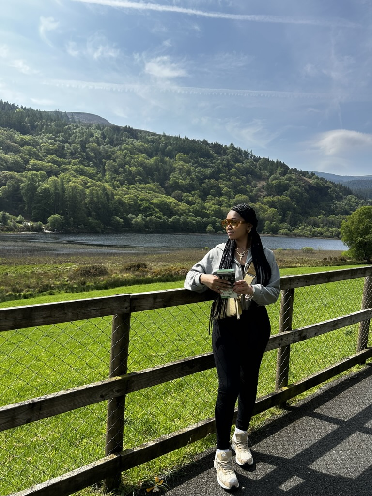
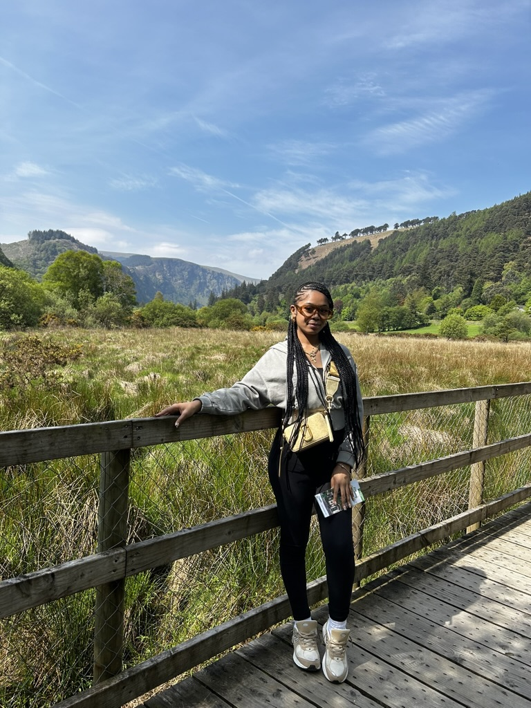
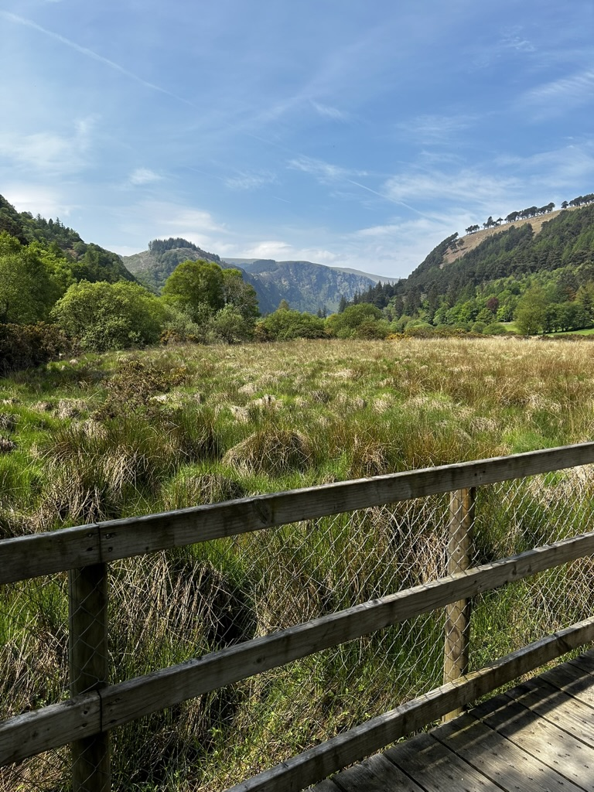
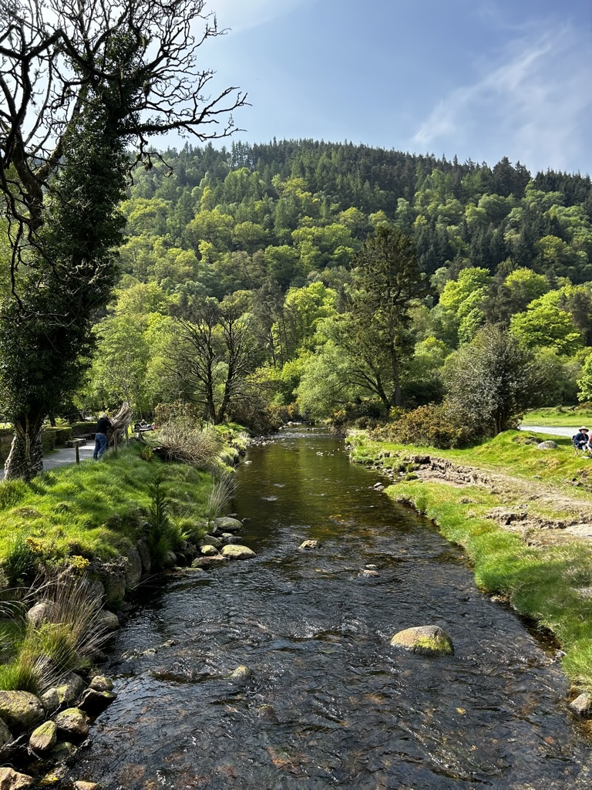
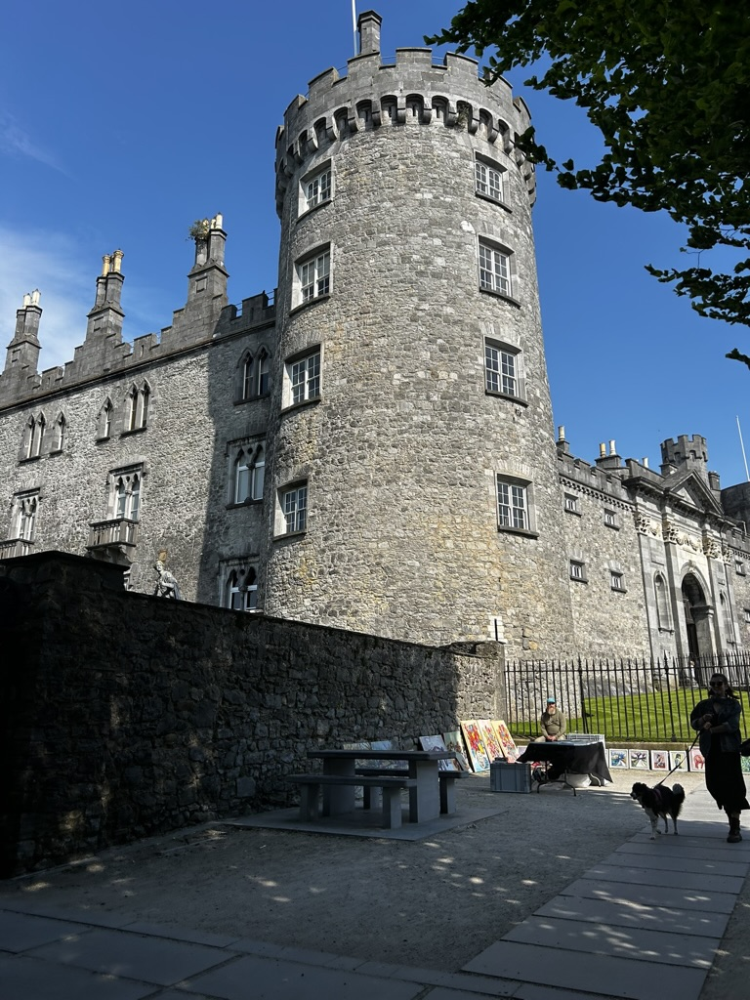
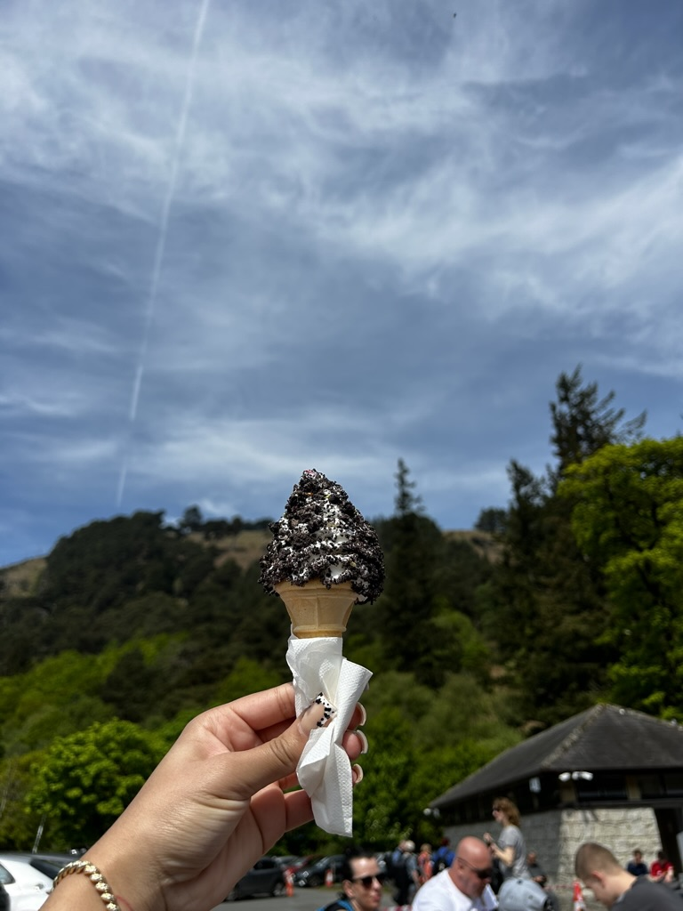
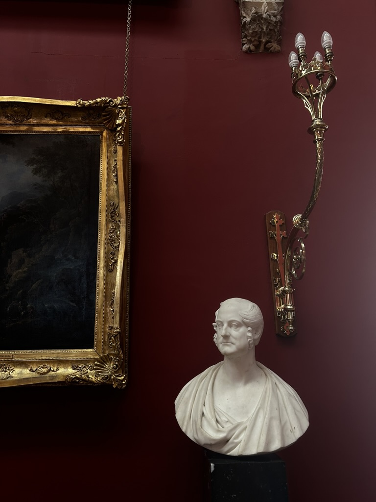
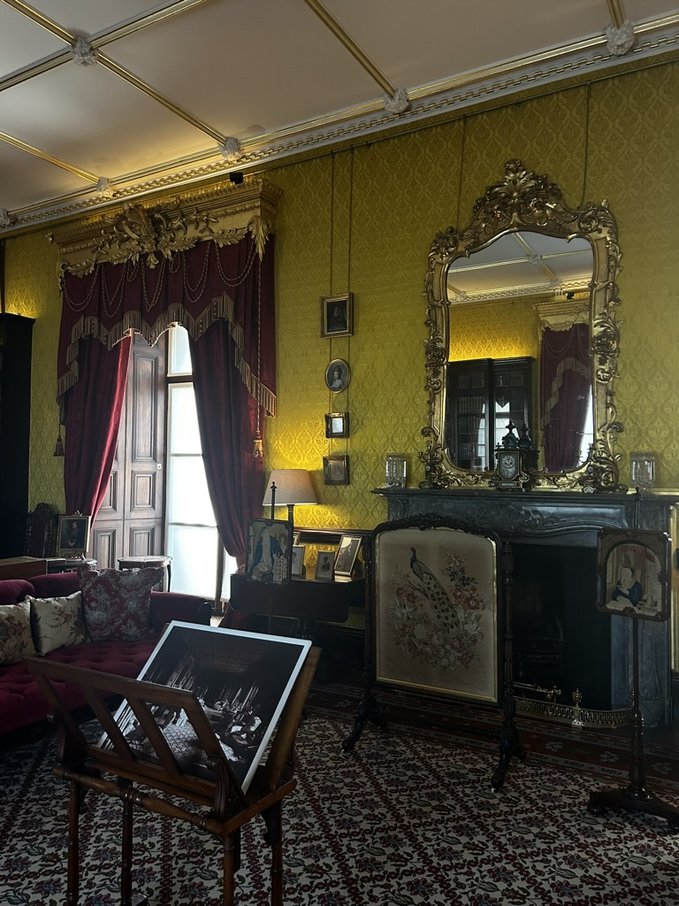

Exploring Ireland: Ansileen's Study Abroad Journey
Blog
☘
Graffon Street
When I strolled down Grafton Street, I was amazed by the vibrant atmosphere and the abundance of local shops like Zara, Sketchers, and even Disney! There were so many options for dining too, with a diverse range of restaurants to choose from. I decided to try out this cool donut place that had all sorts of delicious desserts. It was a fun experience exploring the bustling street and indulging in tasty treats amidst the lively surroundings.
Exploring Dublin: A City of History and Culture




During my trip to the National Museum of Ireland, I got a glimpse into the intense history between Britain and Ireland. The museum was full of cool stuff, like buildings still showing bullet marks from the past. One thing I found really interesting was learning about the different soldiers involved in the conflict and why they fought. It was cool to see how people from different backgrounds had different reasons for being part of the conflict. Learning about this made me think more about how history shapes the world we live in today.
Guest Lecture with Dr David Williams
The speaker provided insights into the concept of gamification, emphasizing that while play is not necessarily bound by rules or purely for fun, a game inherently has objectives and purpose. We discussed the essential components that make up a game, such as gameflow, which includes elements like concentration, challenge, player skills, and feedback. Additionally, the principles of gamification Mechanics, Dynamics, and Aesthetics were highlighted, providing a deeper understanding of how gamification functions. I found the lecture to be incredibly enlightening, offering a fresh perspective on design, whether in the context of games, web design, or user engagement.
Day Trip to Glendalough and Killkenny




Today, we went on a trip to Glendough, and it was breathtaking! We got to see ancient landmarks that have been standing since the 6th century, which was mind-blowing. After spending some time there, we hopped back into the car and drove for about an hour to reach Kilkenny, a delightful little town in Ireland.
Once we arrived in Kilkenny, we wasted no time and went straight to explore Kilkenny Castle. The tour was fascinating, learning about the history behind the castle and the area. It was a fantastic day filled with history and adventure!